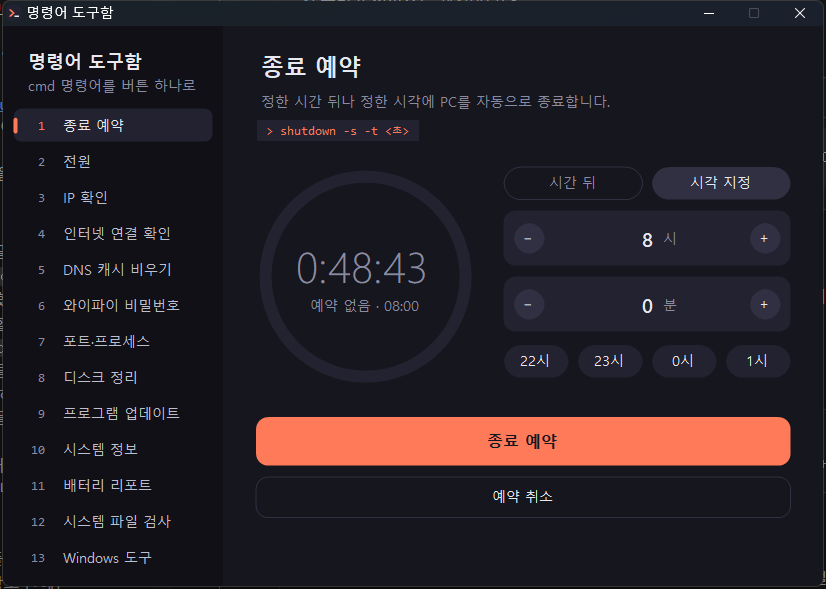

명령어 도구함
cmd 창을 열고 명령어를 입력하지 않아도, 버튼 하나로 Windows 명령을 실행하는 프로그램입니다.

어떤 프로젝트인가요?
자주 쓰지만 외우기 어려운 Windows 명령어들을 기능별로 묶어 두었습니다. 왼쪽 메뉴에서 기능을 고르고 버튼을 누르면 결과가 바로 아래에 나옵니다. 오래 걸리는 명령은 실행 중에 중지할 수 있습니다.
- 종료 예약: 몇 시간 뒤, 또는 정한 시각에 PC 끄기. 앱을 다시 열어도 예약이 유지됩니다.
- 전원: 잠금, 절전, 로그아웃, 재시작, 종료
- IP 확인(공인 IP 포함), 인터넷 연결 확인, IP 다시 받기, 네트워크 초기화
- DNS 캐시 비우기, 저장된 와이파이 비밀번호 보기
- 포트·프로세스: 포트 번호나 프로그램 이름으로 찾아 강제 종료
- 디스크 정리, 프로그램 업데이트(
winget), 시스템 정보, 배터리 리포트 - 시스템 파일 검사, 디스크 검사, Windows 도구 바로가기
다운로드
ZIP 다운로드 · v1.0.0Windows 10, 11용 · 설치 없음 · ZIP 약 34KB (실행 파일과 안내문)
SHA-256: e582c79995f03013e0f4a64cfb55e4a661754d712542fcac70a56266043d7637
PowerShell에서 Get-FileHash 파일이름.zip으로 받은 파일이 원본인지 확인할 수 있습니다.
실행 파일만 받으려면 CmdToolbox.exe (SHA-256 687c31055685c5717db03a100af17d6d2a235530c61f6b09a080217ef658d1ad)
이렇게 실행하세요
- ZIP 파일의 압축을 풉니다.
CmdToolbox.exe를 더블클릭합니다. 설치 과정은 없고, Windows에 기본으로 들어 있는 .NET Framework로 실행됩니다.- 처음 실행할 때 파란 Windows의 PC 보호 창이 뜨면 추가 정보를 누른 뒤 실행을 누르세요. 코드 서명이 없는 개인 제작 프로그램이라 뜨는 창입니다.
브라우저가 "흔히 다운로드되는 파일이 아닙니다"라고 표시하면 다운로드 목록에서 유지(또는 계속)를 누르세요.
사용 전에 알아 둘 것
- 로그아웃·재시작·종료, IP 다시 받기, 네트워크 초기화, 임시 파일 삭제, 강제 종료처럼 되돌리기 어려운 동작은 실행 전에 한 번 더 묻습니다.
- 네트워크 초기화, 시스템 파일 검사처럼 관리자 권한이 필요한 기능은 Windows의 권한 확인 창이 뜹니다.
- 네트워크 초기화 뒤에는 PC를 재시작해야 하고, 직접 넣은 고정 IP나 VPN 설정이 사라질 수 있습니다.
- 삭제할 때는
CmdToolbox.exe를 지우면 됩니다. 종료 예약 기록이 남는%APPDATA%\CmdToolbox폴더도 지우면 깨끗하게 정리됩니다.
소스 코드와 자세한 사용법은 GitHub 저장소에 공개되어 있습니다.